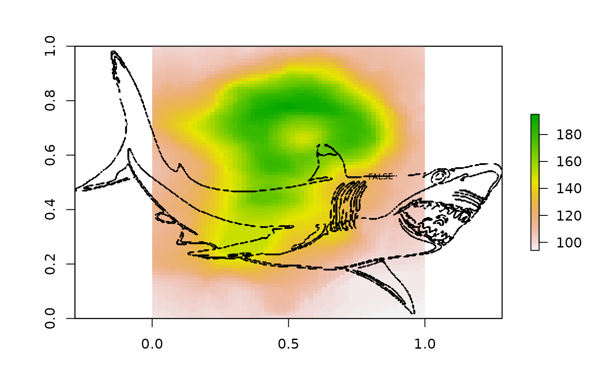
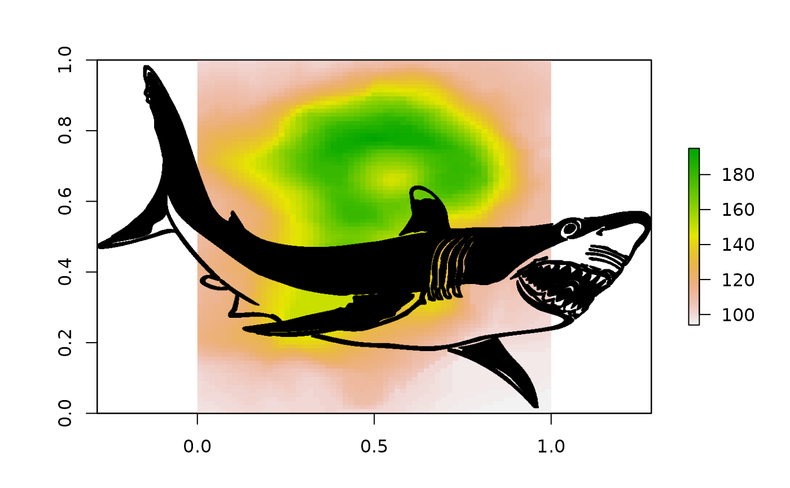

This is just a free image off the internet.
The image was read in and all non-essential items dropped. The dimensions in raster::raster terms is stored in
attr(sharkcano, "rasterdim").
A data frame with 117843 rows and 2 variables:
cell_integer, cell index
byteinteger, byte value of shark image pixels
These are cell values on a grid that is 648x958.
This is the small version from here, see script in data-raw/sharkcano.r http://www.freestockphotos.biz/stockphoto/16214 Thanks to @jennybc for pointers on finding free stuff: https://github.com/jennybc/free-photos
library(raster)
rd <- attr(sharkcano, "rasterdim")
rastershark <- raster(matrix(NA_integer_, rd[1], rd[2]))
rastershark[sharkcano$cell_] <- sharkcano$byte ## byte, heh
## I present to you, Sharkcano! (Just wait for the 3D version, Quadshark).
plot(rastercano)
contour(rastershark, add = TRUE, labels = FALSE)

plot(rastershark, col = "black")
## another way
plot(rastercano)
points(xyFromCell(rastershark, sharkcano$cell_), pch = ".")
